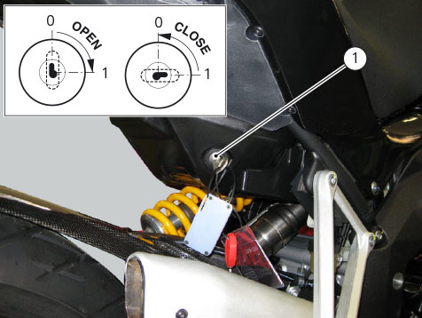
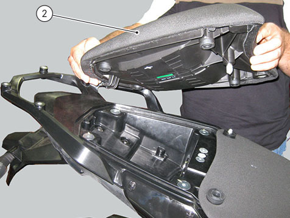
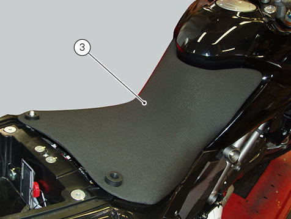

Removing the seat
Insert the key into the seat lock (1) and turn it clockwise until the seat catch disengages with an audible click.

Remove passenger seat (2) from its front retainer by pushing it forward, and raise it until it comes off.

Remove the rider seat (3) from the vehicle by slightly pulling it back and up.
